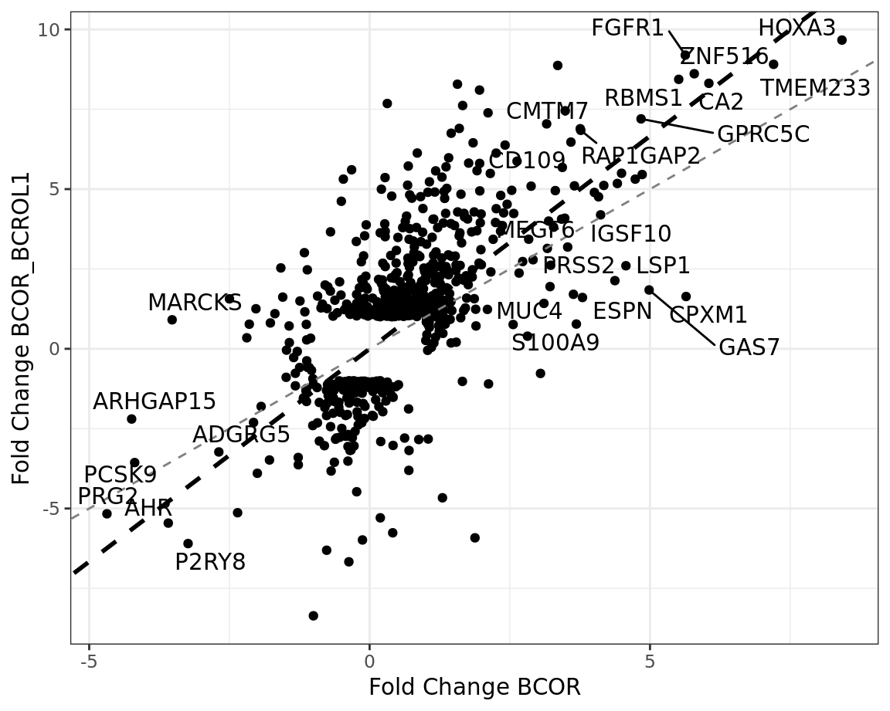

Log-Log plot
A log–log plot compares the magnitude of gene regulation between two experimental conditions by plotting the log2 fold change for one contrast on the x-axis against the log2 fold change for a second contrast on the y-axis. Each point represents a gene, allowing direct, quantitative comparison of how strongly and in which direction that gene responds across the two conditions. This visualization is particularly useful for assessing shared versus condition-specific transcriptional responses.
The diagonal line with slope 1 represents equal effects in both conditions: genes lying close to this line show similar fold changes in magnitude and direction in both contrasts, suggesting a common regulatory response. Genes in the upper left quadrant are upregulated in the second condition but downregulated in the first, while genes in the lower right quadrant show the opposite pattern—upregulated in the first condition and downregulated in the second. These quadrants therefore highlight genes with opposing or divergent regulation between conditions, which are often of particular biological interest.
Compared to conventional Venn diagrams, which rely on discrete gene sets defined by arbitrary significance thresholds, log–log plots retain the full quantitative information of the data. By comparing continuous fold-change values rather than binary inclusion or exclusion from gene lists, this approach avoids loss of information about genes with consistent but moderate effects. Importantly, it reduces the risk of missing biologically meaningful genes that fail to pass stringent multiple-testing corrections in one condition but show coherent behavior across contrasts. As such, log–log plots provide a more nuanced and informative framework for comparing transcriptional responses across experimental conditions.
